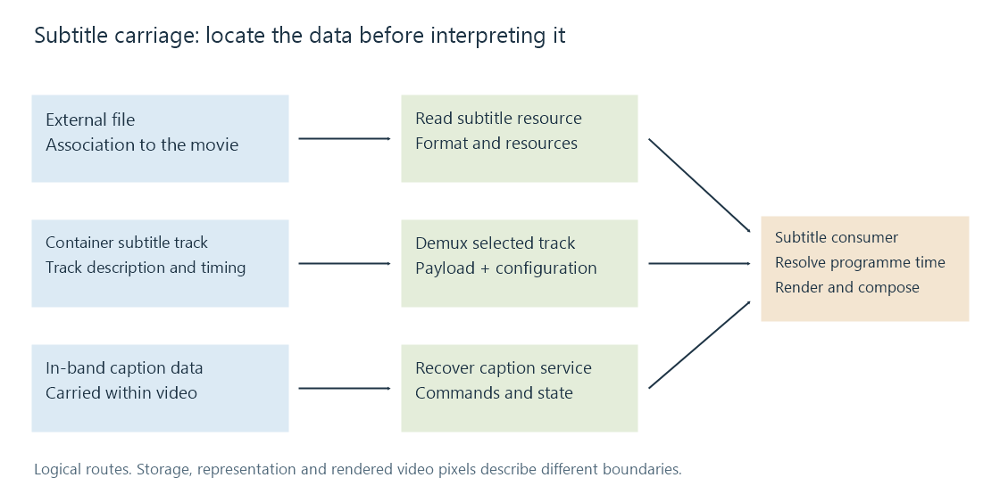

Subtitle transports
Subtitle transport determines where subtitle data travels and how its identification, timing and resources reach the renderer.
The same subtitle sentence can arrive in a file next to a movie, in a track within the movie, or in a separate streaming rendition. Transport describes that carriage. The subtitle format describes the data being carried.
Changing the carriage can leave the wording and appearance intact. It can also require a format conversion, a new timeline mapping or a different renderer. Those are separate operations rather than consequences of the word “streaming” alone.
The routes carry different relationships
| Route | Where the subtitle information is found |
|---|---|
| External file | A separate resource associated with the media |
| Embedded track | A separately described timed component in a container |
| In-band captions | Caption data within another elementary stream, commonly video |
| Streaming rendition | A selected resource/track described by a streaming manifest |

None of those descriptions says whether the visible content is character text or graphics. Nor does “embedded” mean that subtitle pixels have been permanently painted into the video.
The renderer needs more than a payload
A sentence without its start and end times is no longer the same timed presentation. A palette-indexed picture without its palette cannot be interpreted correctly. An ASS event can depend on global styles and font resources.
The delivered representation therefore needs its applicable configuration, identity and time mapping. For an embedded track, the container can supply times while the payload supplies text. For streaming text, a segment-local clock may need mapping to the shared programme clock.
A transport conversion must preserve the meaning of those relationships even when their storage changes. Copying the literal standalone timestamp line into a container payload is not equivalent to setting that container's presentation timestamp.
Carriage and video processing are separate decisions
An Emby app may receive compatible video alongside separately delivered subtitles. A subtitle conversion can change the text delivery without changing the encoded video. If the selected route instead needs subtitle pixels incorporated into the pictures, rendering and video encoding enter the path.
Direct Play, Direct Stream and transcoding describe the media-delivery choices. The selected track and its renderer explain the subtitle work within that route.
See Also
- External subtitle files
- Embedded subtitle tracks
- In-band captions
- Subtitles in HLS
- Timed text in MPEG-DASH